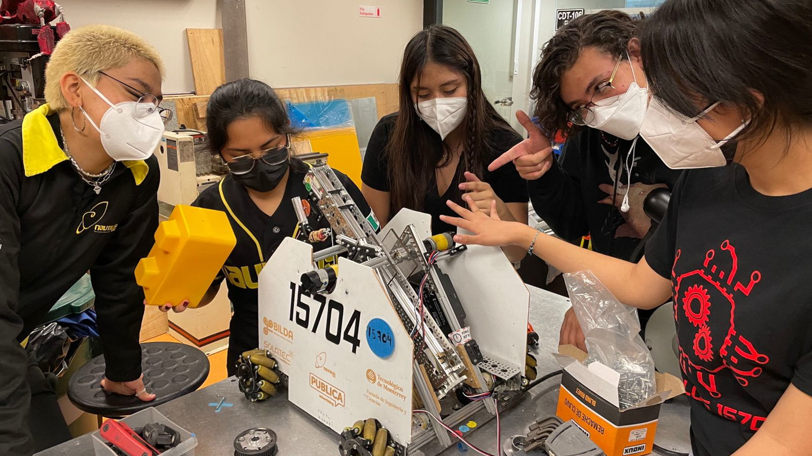
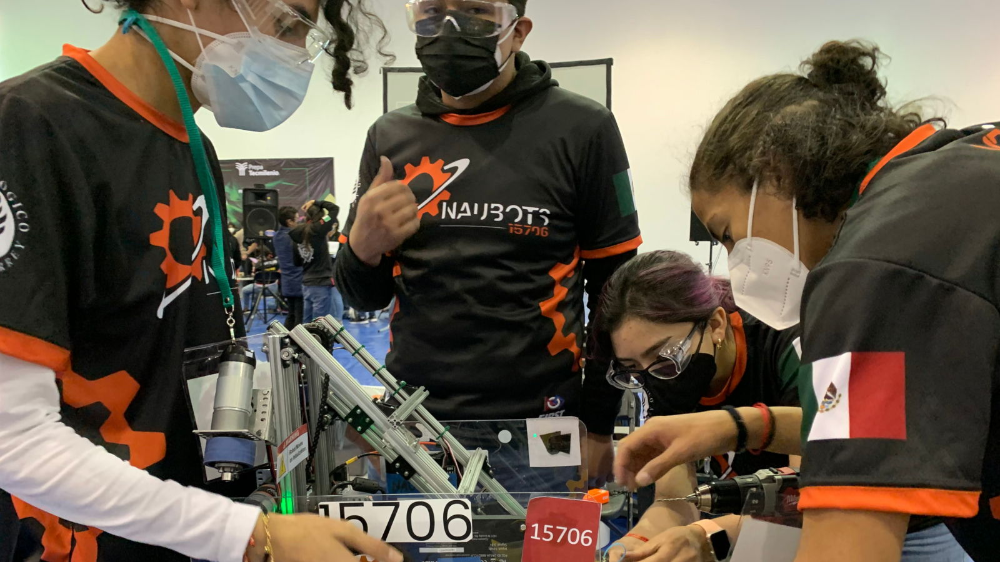

Conoce más de nuestros equipos



Nuestros miembros rookies del equipo aprenden y practican sus habilidades en las diferentes áreas del equipo al participar en nuestros dos equipos de FIRST Tech Challenge: Naubots 15706 y Hardlus 15704
“Like A Girl” busca inspirar e impulsar a mujeres interesadas en STEM a incursionar en alguna de sus áreas.
Evento organizado para conocer otros equipos de FIRST; generar nuevas alianzas y difundir las Filosofías de FIRST en la comunidad.
POR HARDLUS 15704 Y THE COCONUTS 2486